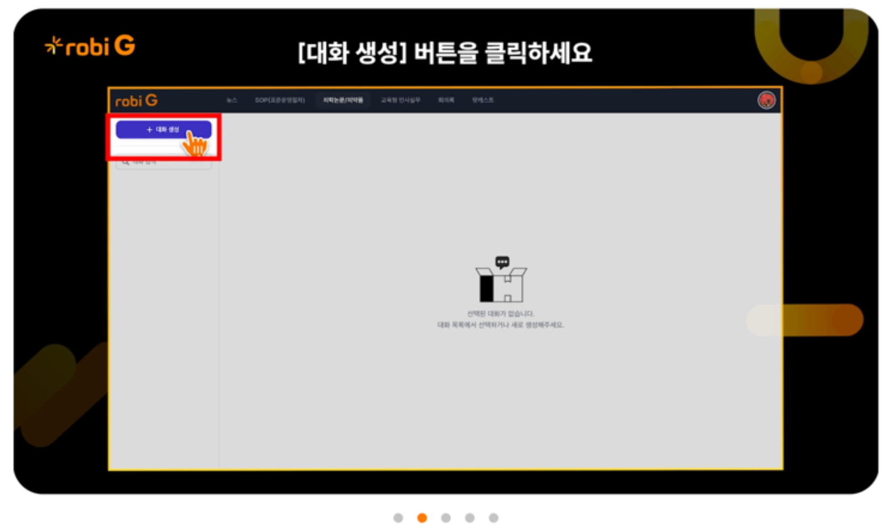

생성형 AI
robi G

robi G 서비스 화면 예시
기업 내부 문서 활용
기업이 보유한 문서라면 HTML, PDF, Word, Excel 등 및 파일 형태의 모든 자료도 데이터베이스로 구축하여 AI 검색에 활용할 수 있습니다.
할루시네이션 차단
robi G는 고객사 데이터로 구성한 지식 베이스에 근거하여 GPT 모델의 주요 문제점인 할루시네이션 없이 믿을 수 있는 답변만 제공합니다.
완전 자동화된 AI 서비스
robi G는 데이터 소스 관리부터 데이터 임포트, 연계, 생성형 AI 서비스 관리의 기능을 원스톱을 통해 자동화할 수 있습니다.
탁월한 정보 보호
robi G는 기업 기밀 및 개인 정보 등 민감 정보 유출 없이 기업별 별도 네트워크/사무망에 안전하게 사용할 수 있습니다.
맞춤형 서비스 설계
포시큐브는 기업 현황과 목적에 따라 robi G의 맞춤형 생성형 AI를 기능까지 커스텀 개발 지원하며, 최적의 서비스를 제공합니다.
다양한 LLM & LLMOps 지원
robi G는 MS Azure, Claude-3, Gemini, CLOVA-X 등 다양한 LLM의 동시 사용 및 LLMOps 서비스를 지원합니다.